Features
Face recognition + blink check
Entry terminal in the browser; match, liveness and a clear reason for every denial.
Face enrollment
5 quality-checked samples with consent. Photos are never stored, only an encrypted template.
Automatic attendance
Present or Late by curfew, with hostel-day logic for after-midnight arrivals.
Append-only entry log
The database itself refuses edits and deletes of log rows.
Guest visits
Student request, warden approval with time window and entry limit, guest face enrolled for the visit.
Alerts
Emergency button and an automatic security alert after repeated failed attempts, with acknowledge workflow.
Optional SMTP: alerts and weekly parent reports through a queue with retry and status.
Reports
Daily, weekly and monthly attendance and security reports with search, sort and print layout.
Security
Role-based access on the server, CSRF, hashed passwords, lockout, parameterized SQL, safe errors.
Tested
875 automated tests, including an access check for every route and every role.
Technology
| Backend | Python 3.11, Flask, Flask-Mail, APScheduler |
|---|---|
| Database | SQLite |
| Frontend | Jinja templates, Bootstrap 5, vanilla JavaScript |
| Recognition | dlib / face_recognition, OpenCV, NumPy |
| Protection | Fernet-encrypted face templates, CSRF tokens, role-based access control |
| Tests | pytest |
Screenshots
Demo data only (made-up names); no real students or faces.
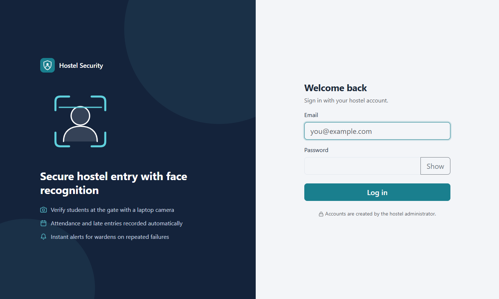
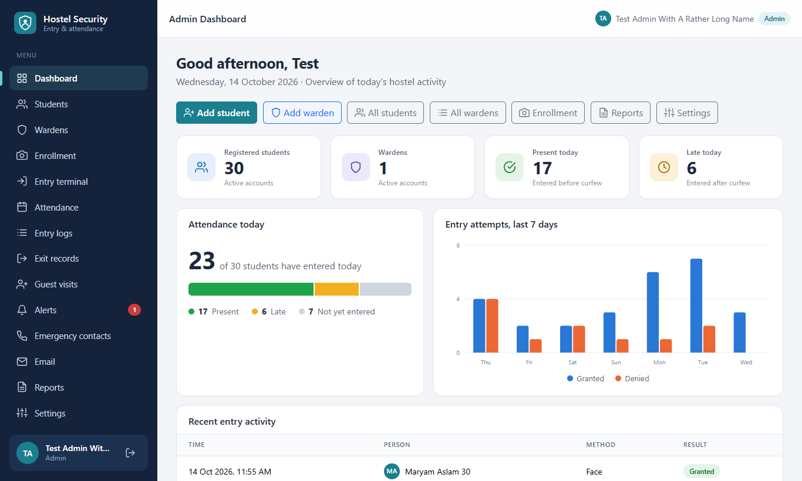
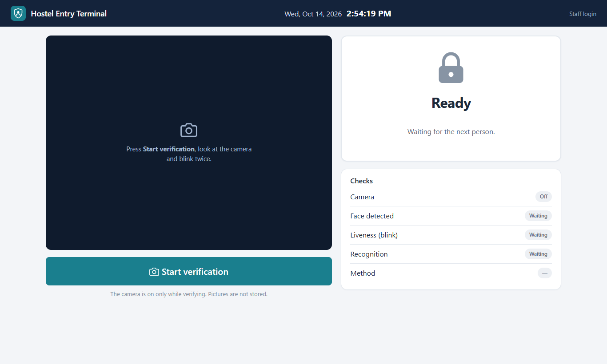
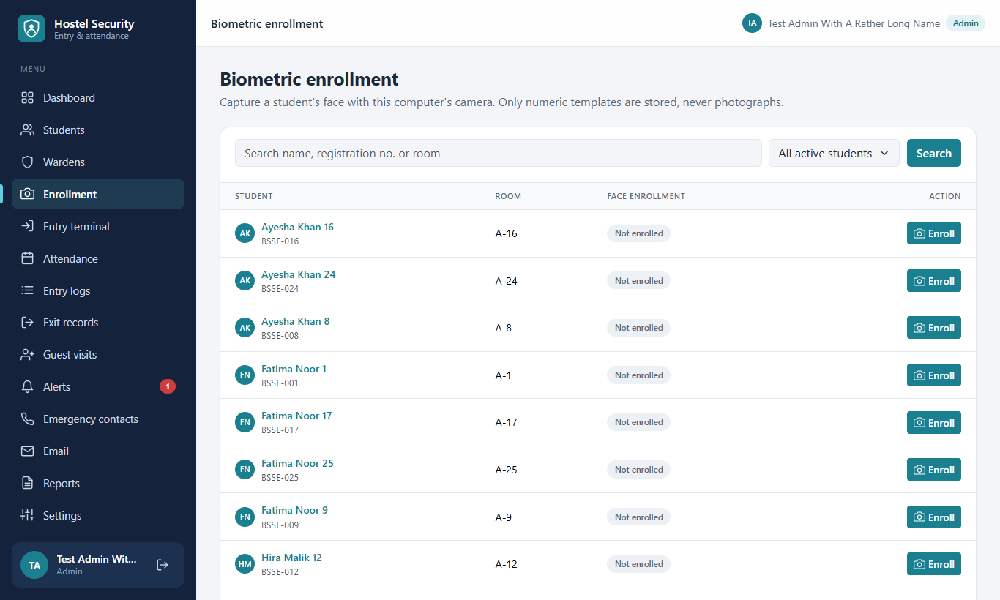
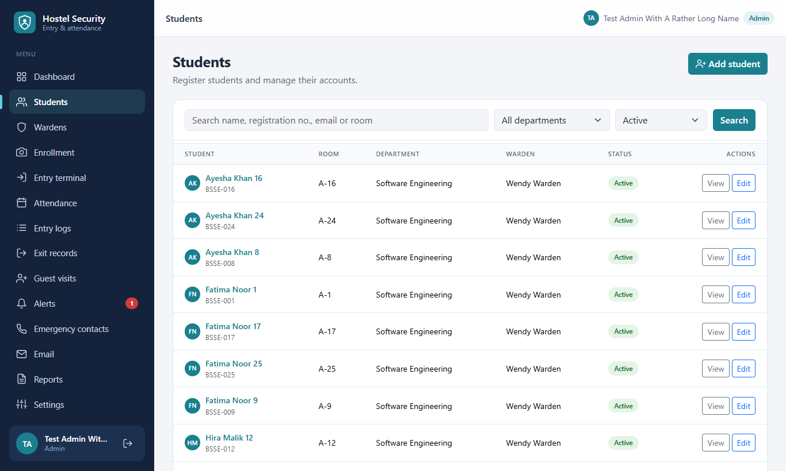
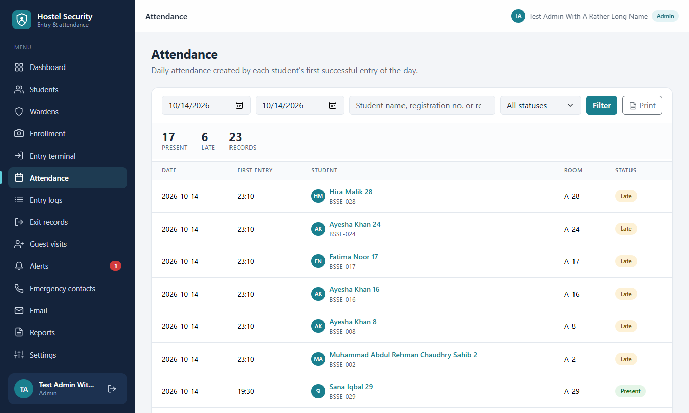
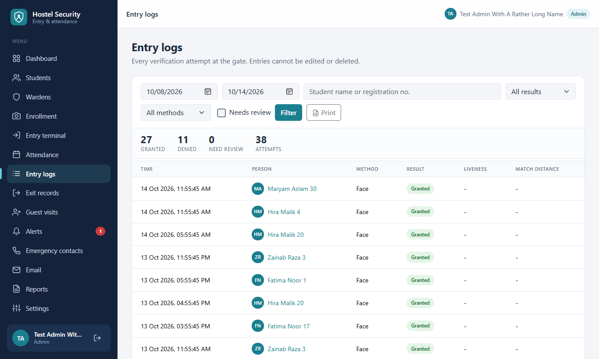
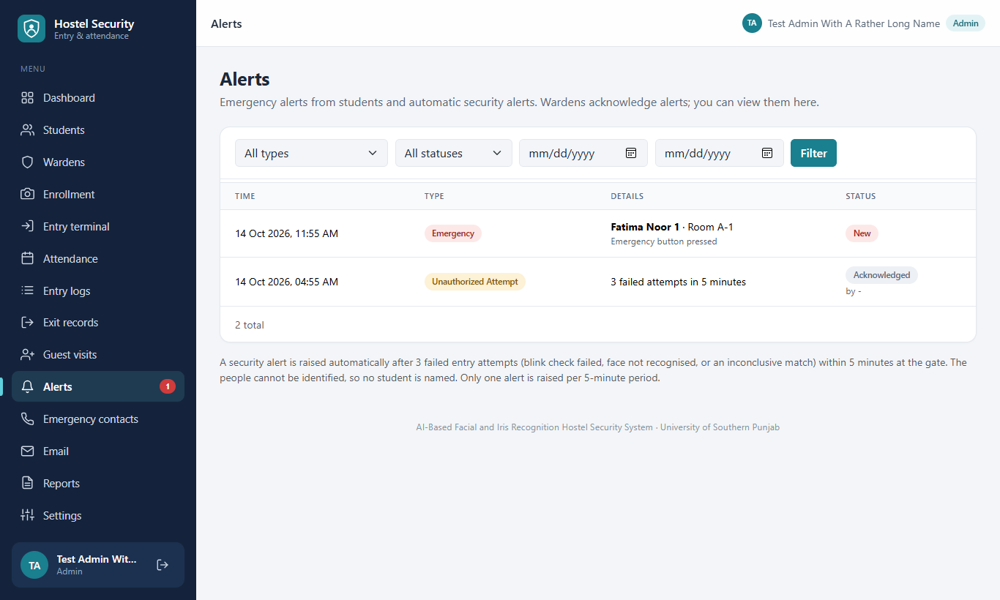
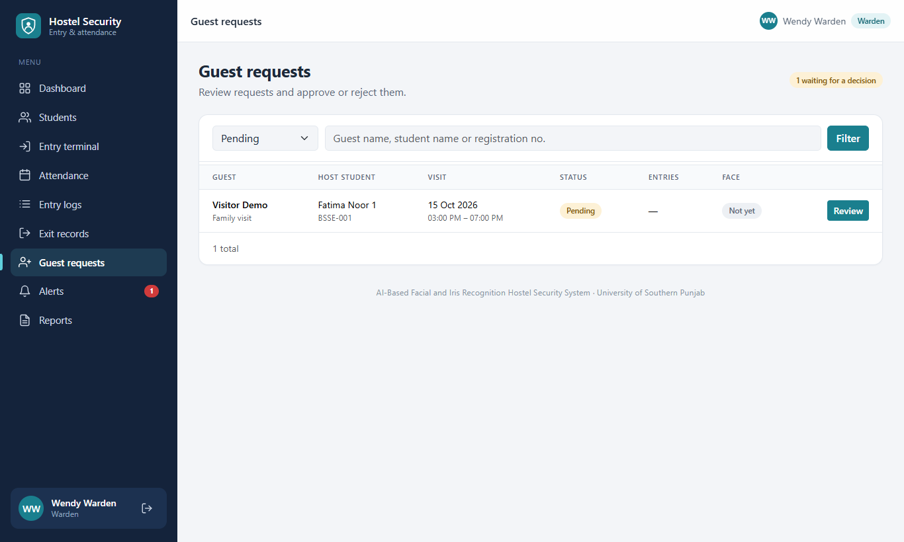
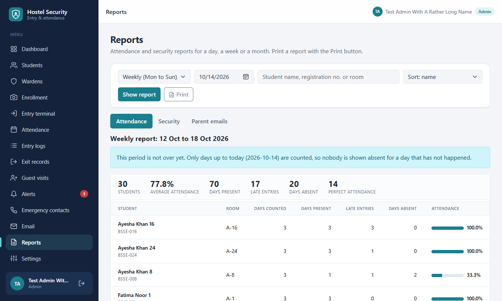
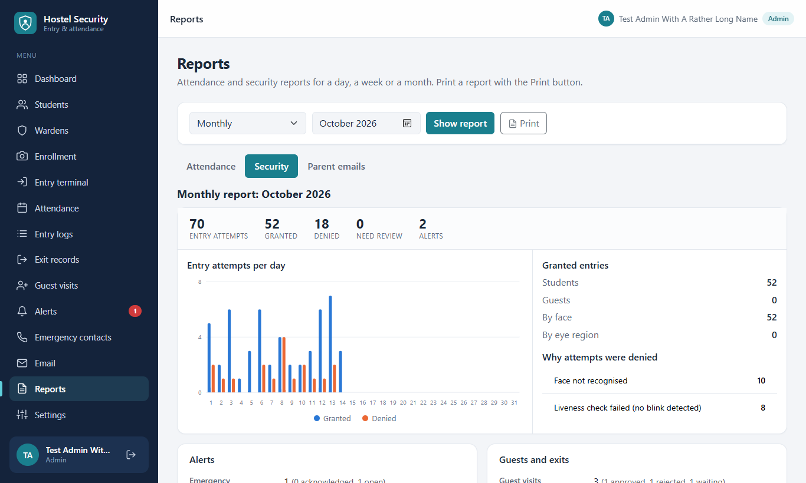
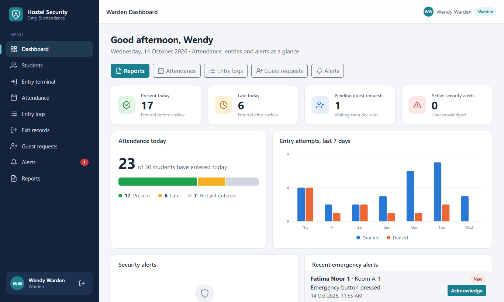
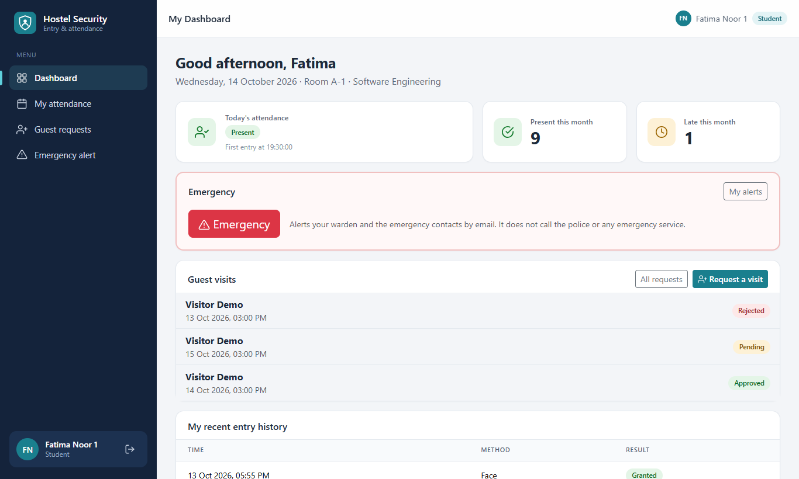
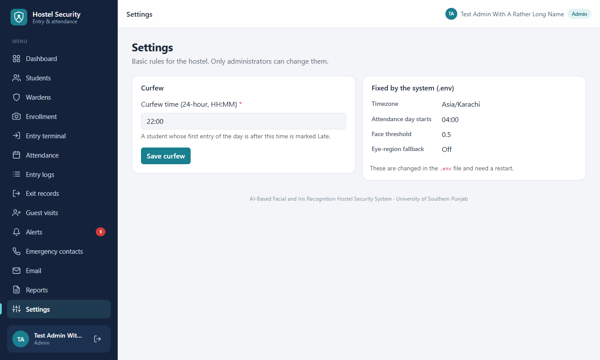
On a phone
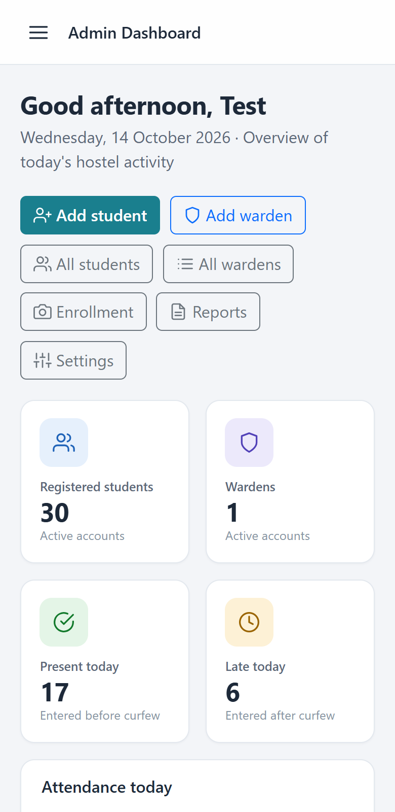
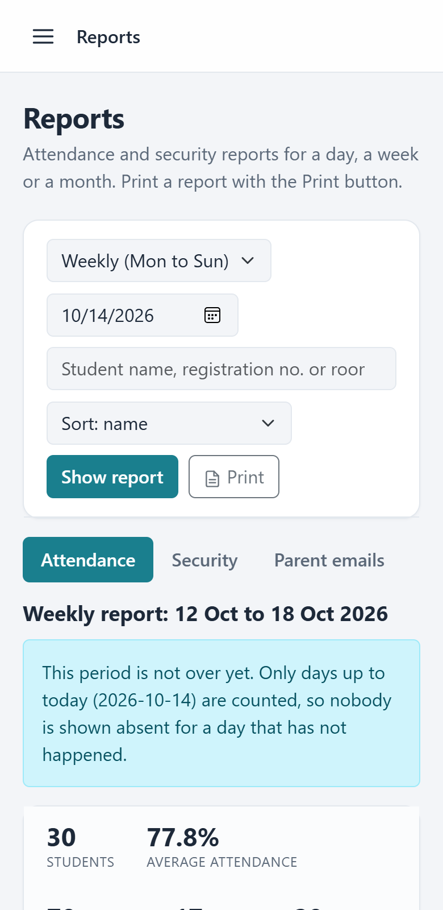
How to run (Windows, PowerShell)
You need Windows, Python 3.11 and a browser with a camera (Edge or Chrome).
git clone https://github.com/fatimanisar429-oss/AI_Based_facial_recognition_system.git cd AI_Based_facial_recognition_system python -m venv .venv .\.venv\Scripts\Activate.ps1 pip install -r requirements.txt pip install --no-deps face_recognition==1.3.0 Copy-Item .env.example .env
Open .env and set SECRET_KEY (a long random value) and BIOMETRIC_KEY
(from flask --app run generate-biometric-key; back it up). Then:
flask --app run create-admin python run.py # open http://127.0.0.1:5000
Use http://127.0.0.1:5000 on the same computer so the browser allows the camera.
More: camera setup, demo guide,
security review, manual test checklist.